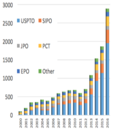

Statistics
links:
The number of patents granted has rapidly increased. Figure 1 shows the number of artificial intelligence (AI) patents granted by application country and technology type and reveals that it has increased more than threefold (from 708 items in 2012 to 2,888 items in 2016). In particular, AI patents granted in the US increased by 1,628 items during this period (Figure 1a), accounting for approximately 75% of the increase worldwide.

Table 1 represents the change of AI patents granted by type of technology at each patent office. The table shows that the composition of patent-granted shares differs among countries
| country |
AI technology type |
2000-2016 |
share |
2000-2004 |
2005-2009 |
2010-2014 |
2015-2016 |
| US |
biological |
1455 |
19.9% |
221 |
316 |
400 |
518 |
| Japan |
biological |
679 |
54.40% |
58 |
309 |
232 |
80 |